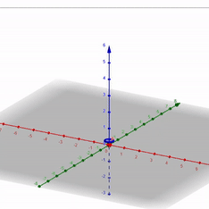
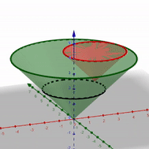
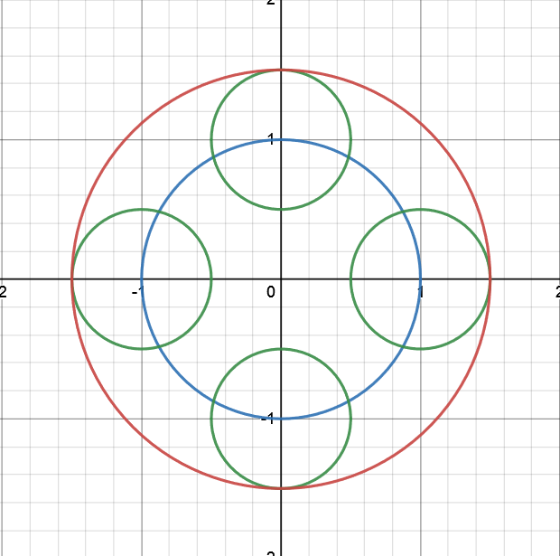
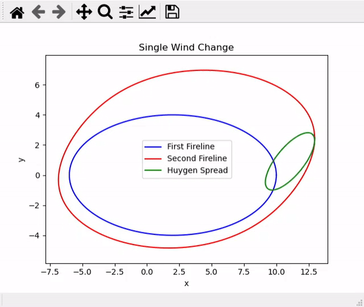

Wildfire Propagation Modeling
Accompanying page to my wildfire propagation modeling presentation for MAT477.
You can find some brief notes here.
Huygen's Principle and Fire Modeling
First, here is a visualization of a wave propagating from a point source.
Here is a gif for getting some intuition for how Huygen's Principle works in 2D. The z-axis is the time axis. The larger cone is the propagation from a point source at the origin, and the smaller cone is the propagation from a point source on the wavefront of the larger cone after 2 seconds. Notice that both of these situations have the same outer wavefront.
For another visualization, we can look at what this looks like in 2D. The blue ellipse is the wavefront propagated for 1 second at a speed of 1 m/s from a point source at the origin. The green ellipses are wavefronts propagated for 1/2 second at a speed of 1 m/s from a point source on the blue wavefront. The red ellipse is the wavefront propagated after 3/2 seconds from the point source at the origin.
The main idea in Anderson (1982) is that we can apply Huygen's Principle to fire spread. In the below gif, the blue line is the fireline after 4 seconds with a constant wind blowing in the positive x direction. Then, the wind switches and we apply Huygen's Principle, which generate the green ellipses at each point. The red ellipse is the final fireline after 4.5 seconds total.
References
Anderson, D. H., Catchpole, E. A., De Mestre, N. J., & Parkes, T. (1982). Modelling the spread of grass fires. Journal of the Australian Mathematical Society. Series B, Applied Mathematics, 23(4), 451–466. https://doi.org/10.1017/S0334270000000394
Ciarochi, J. (2020). The history of wildfire modeling. Triplebyte.com. Retrieved 30 September 2021, from https://triplebyte.com/blog/the-history-of-wildfire-modeling.
Finney, Mark A. 1998. FARSITE: Fire Area Simulator - model development and evaluation. Research Paper RMRS-RP-4. Ogden, UT: USDA Forest Service, Rocky Mountain Research Station. 47 p.
Frandsen, W. H. (1971). Fire spread through porous fuels from the conservation of energy. Combustion and Flame, 16(1), 9–16. https://doi.org/10.1016/S0010-2180(71)80005-6
Mandel, J., Beezley, J. D., & Kochanski, A. K. (2011). Coupled atmosphere-wildland fire modeling with WRF 3.3 and SFIRE 2011. Geoscientific Model Development, 4(3), 591–610. https://doi.org/10.5194/gmd-4-591-2011
Rothermel, R. C. (1972). A mathematical model for predicting fire spread in wildland fuels. Intermountain Forest and Range Experiment Station, Forest Service, United States Department of Agriculture.